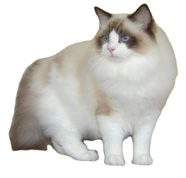

Ragdoll breed
Breeds are a kind of cat each breed makes a cat look diffirent.
The persian cat breed is known as the oldest cat breed, the persian cat breed can be traced all the way to the 1600's!
Savannahs are excellent jumpers. They can jump up to 8 feet horizontally and climb easily. They are banned in several states, including Hawaii, Massachusetts and Georgia because of their “hybrid” status. A first-generation Savannah Cat can cost more than $20,000.
Bombay cats go by many nicknames, which include: mini black panther, the patent-leather kid with the new penny eyes, and parlor panther. Bombays are known for seeking out the warmest spots in the house, so they will oftentimes curl up under blankets, in your bed, or in spots of sunlight. Bombay cats are also a rare cat breed.